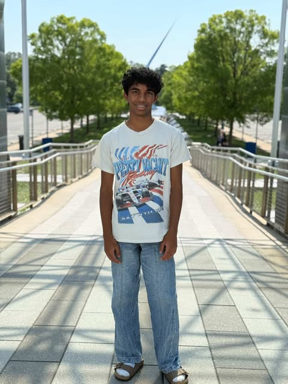

Anish Meruva
Charlotte, North Carolina Chapter President
Hi! My name is Anish Meruva, and I’m a rising sophomore from North Carolina. I was inspired to start a chapter of Hearts for Healing after seeing how small acts of care can make a big difference in someone’s day. Through my involvement in 4-H, volunteering, and community outreach, I’ve seen firsthand the power of service, and I want to continue that by spreading kindness to those who need it most.
I’m passionate about bringing people together and creating moments that make others feel seen, supported, and valued. When I’m not volunteering, you’ll probably find me studying, working on creative projects, or spending time with family and friends.